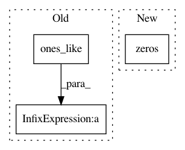

c1a72b36444c8027c27c2dc02dc03d5b69a5e389,keras/layers/recurrent_convolutional.py,LSTMConv2D,get_constants,#LSTMConv2D#Any#,482
Before Change
if 0 < self.dropout_W < 1:
input_shape = self.input_spec[0].shape
input_dim = input_shape[-1]
ones = K.ones_like(K.reshape(x[:, 0, 0], (-1, 1)))
ones = K.concatenate([ones] * input_dim, 1)
B_W = [K.in_train_phase(K.dropout(ones, self.dropout_W), ones)
for _ in range(4)]
constants.append(B_W)
After Change
if 0 < self.dropout_U < 1:
ones = K.zeros_like(x)
ones = K.sum(ones, axis=1)
ones = self.conv_step(ones, K.zeros(self.W_shape),
border_mode=self.border_mode)
ones = ones + 1
B_U = [K.in_train_phase(K.dropout(ones, self.dropout_U), ones)
In pattern: SUPERPATTERN
Frequency: 3
Non-data size: 3
Instances
Project Name: keras-team/keras
Commit Name: c1a72b36444c8027c27c2dc02dc03d5b69a5e389
Time: 2016-10-13
Author: jeanmichel.arbona@gmail.com
File Name: keras/layers/recurrent_convolutional.py
Class Name: LSTMConv2D
Method Name: get_constants
Project Name: ray-project/ray
Commit Name: 428516056abe41f135133e732a8d44af6ce9a234
Time: 2020-04-15
Author: sven@anyscale.io
File Name: rllib/utils/exploration/ornstein_uhlenbeck_noise.py
Class Name: OrnsteinUhlenbeckNoise
Method Name: _get_torch_exploration_action
Project Name: IBM/adversarial-robustness-toolbox
Commit Name: 8d9e06745e0c05fd3877bb1d5143309b342c362e
Time: 2020-07-05
Author: kz.takemoto@gmail.com
File Name: utils/resources/create_inverse_gan_models.py
Class Name:
Method Name: build_gan_graph